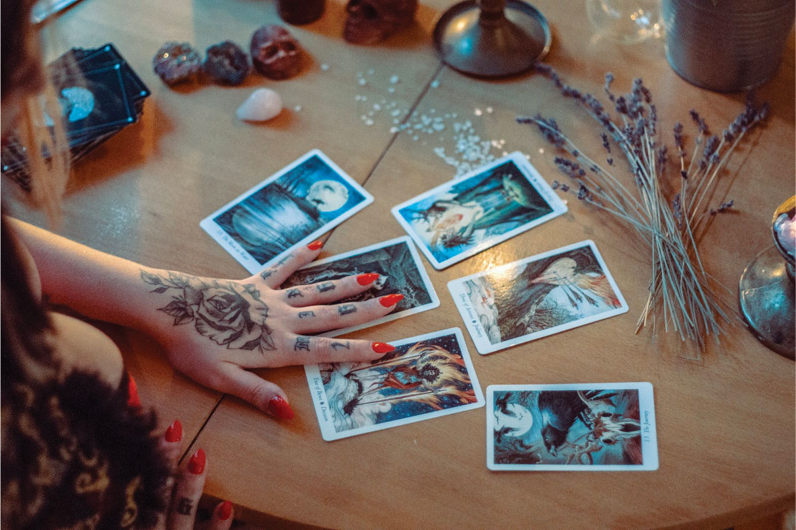
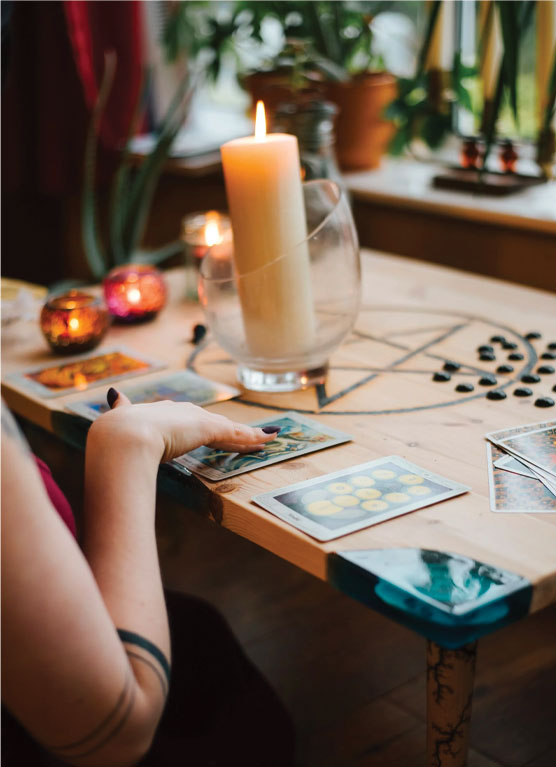
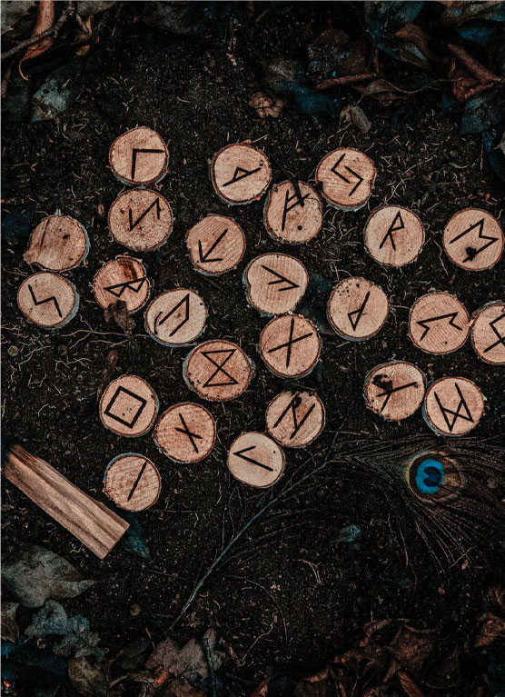

Posted on 2023/10/02
Tarot decks are an effective instrument for self-reflection and spiritual development. You can use them to connect with your intuition, obtain insight into your subconscious mind, and receive direction from the higher realms.
Tarot cards are a deck of 78 cards divided into the Major Arcana and Minor Arcana. The Major Arcana consists of 22 cards that represent archetypes and universal themes, such as the Fool, the Magician, the High Priestess, the Emperor, the Empress, and the Chariot. The Minor Arcana is comprised of 56 cards divided among four suits: wands, cups, swords, and pentacles. Each suit represents a distinct aspect of the human experience: wands represent passion and creativity, cups emotions and relationships, swords intelligence and communication, and pentacles work and finances.
Tarot cards can be utilized in numerous methods for spiritual development. Using them for divination or to seek guidance from the higher realms is a prevalent practice. To accomplish this, you would shuffle the deck and then select a card or cards at random. Then, you can interpret the cards' meaning based on your intuition and knowledge of tarot symbolism.
Self-reflection is another method of utilizing tarot cards for spiritual development. To accomplish this, you would first select a card that represents a query or problem in your life. Then, you can meditate on the card and pay close attention to any thoughts, emotions, or images that arise. This can help you develop a deeper understanding of your subconscious mind and yourself.
Additionally, Tarot cards can be utilized for journaling and creative writing. To accomplish this, you would select a card and then describe its significance. You may also discuss how the card relates to your personal life experiences and spiritual development.
Here are some specific applications of tarot cards for spiritual development:
To tap into your intuition. Tarot cards can help you communicate with your intuition by providing a symbolic language through which you can access your subconscious. When you draw a tarot card, pay close attention to any thoughts, emotions, or images that come to mind. This is the voice of your intuition.
To develop an understanding of your subconscious psyche. Tarot cards can help you obtain insight into your subconscious mind by representing your hidden desires, fears, and beliefs through symbols. Consider the card's significance and how it relates to your own life experiences when you draw one.
To receive direction from higher domains. You can use Tarot cards to obtain guidance from the higher realms by receiving messages from your angels, guides, and spirit animals. When drawing a tarot card, seek guidance from a higher power and follow your intuition.
To encourage introspection.Tarot cards can be used to encourage self-reflection by facilitating the exploration of one's thoughts, emotions, and beliefs. Consider the card's significance and how it relates to your own life experiences when you draw one.
To gain a greater understanding of oneself. Tarot cards can assist you in gaining a deeper understanding of yourself by revealing your strengths, vulnerabilities, and obstacles. Consider what the card means to you and how it relates to your own life journey when you draw a tarot card.
If you are interested in using tarot cards for spiritual development, you must keep a few factors in mind. First, it is essential to locate a tarot deck to which you feel compelled. There are numerous tarot decks available; therefore, take the time to peruse your local bookstore or an online retailer until you find one that appeals to you.
Second, it is essential to understand the fundamentals of tarot symbolism. Numerous publications and websites can instruct you on the meanings of the various tarot cards.
Once you have a basic comprehension of tarot symbolism, you can begin to intuitively interpret the meaning of the cards.
Finally, patience and an open mind are essential when using tarot cards for spiritual development. It requires time and practice to learn how to effectively use tarot cards. Do not become disheartened if you do not see immediate results. You will eventually develop a deeper understanding of tarot and how to use it for your own spiritual development if you continue to practice and study.
Here are some additional guidelines for employing tarot cards for spiritual development:
Create a sacred space in which to read.This could be a basic area of your home in which you feel r elaxed and at ease. You may wish to decorate your space with candles, crystals, or other sacred objects. Set a purpose for your reading before beginning.What are you hoping to discover from the cards?
Her primary mission is to serve as a source of enlightenment and support for individuals and communities seeking answers and guidance on a regular basic, hence, the Elite Club.
Be an Elite?